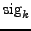
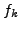
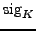
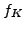
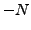
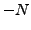

Next: Equivalent sig
Up: How COMBINE Works
Previous: Frequency resolution
Contents
Limit of harmonic order
The range of harmonic orders is restricted by the parameter N, which is calculated according to
where
 denotes the sig associated to the frequency  and
 is the sig associated to the last frequency in the input file, . If the keyword csig is set, the csig is consistently taken instead of the sig. The parameter  is provided by the keyword order in the file <infile>.ini, followed by a floating-point number. The default value is
is provided by the keyword order in the file <infile>.ini, followed by a floating-point number. The default value is  . Given the limit
. Given the limit  , the coefficients of a linear combinations are restricted to indices from  to according to
, the coefficients of a linear combinations are restricted to indices from  to according to
.
Piet Reegen
2009-09-23